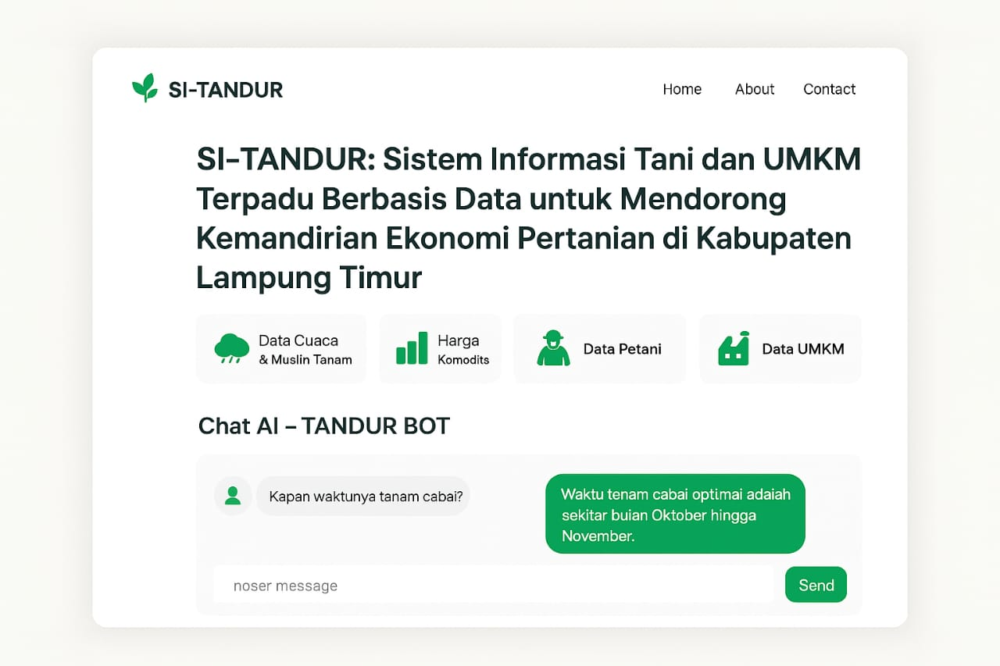

↠Back
Projects / SI-TANDUR
SI-TANDUR
SI-TANDUR is an Integrated Agricultural Information System specifically designed for East Lampung to assist local farmers in monitoring and managing the planting process more efficiently. This system facilitates crop planning, real-time monitoring of plant conditions, and provides care and harvest recommendations based on collected data.
Tools
Focus Analyst



🧩Key Features of SI-TANDUR
- 👁️ Real-Time Crop Monitoring – Track crop conditions instantly.
- 🌱 Care & Harvest Recommendations – Advice on fertilization, watering, and harvest forecasts.
- 📅 Crop Planning – Schedule planting and select seeds.
- 🤖 AI Chat – Virtual agricultural consultation.
- 🪠MSME Support & Store Recommendations – Market harvests and find nearby agricultural stores.
×

Comments (0)